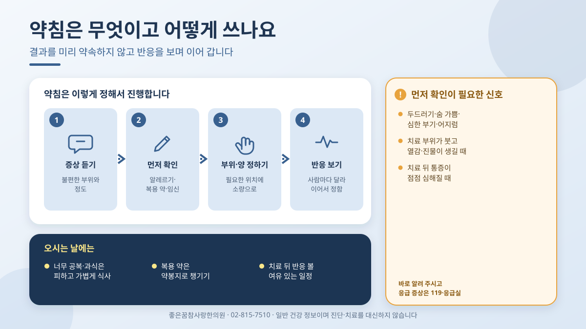

약침은 한약재에서 추출해 정제한 약액을 경혈이나 통증 부위 주변에 소량 주입하는 한방 치료 방법으로, 사용 여부와 종류는 진찰 후 필요하다고 판단될 때 상담해 정합니다.
여쭙는 것
- 현재 불편한 부위와 증상은 어떤가요?
- 약, 음식, 소독약 등에서 알레르기나 이상 반응이 있었나요?
- 복용 중인 약(항응고제, 항혈소판제, 스테로이드 포함)이 있나요?
생활에서 해 볼 것
- 복용 중인 약은 약봉지나 사진으로 챙기기
- 알레르기 경험이 있다면 무엇에, 어떤 반응이었는지 적어 두기
- 너무 공복이거나 과식한 상태를 피하고 가볍게 식사하고 오기
한의원에서 함께 살필 것
- 근육이 뭉치고 한 부위의 뻐근함이 오래 이어질 때 다른 치료와 함께 사용할 수 있는…
- 침 치료만으로 충분한지, 다른 방법을 함께 쓸지 증상 중심으로 함께 정합니다.
- 알레르기가 있거나 걱정되는 점이 있을 때 충분히 듣고 결정합니다.
먼저 확인이 필요한 신호
- 약침을 받은 뒤 두드러기, 숨 가쁨, 심한 부기, 어지럼이 나타나는 경우(즉시 알리…
- 치료 부위가 붓고 열감, 진물이 생기는 경우
- 치료 뒤 통증이 점점 심해지는 경우

약침은 한약재에서 추출해 정제한 약액을 경혈이나 통증 부위 주변에 소량 주입하는 한방 치료 방법입니다. 침 치료에 한약 성분을 더한 방식이라고 이해하시면 쉽습니다. 모든 분에게 쓰는 것은 아니며, 진찰 후 필요하다고 판단될 때 알레르기와 복용 약을 확인한 뒤 상담해 정합니다.
왜 약침을 쓰나요
- 한 부위의 뻐근함이 오래 이어질 때 침과 함께 쓸 수 있는 방법의 하나로 상담합니다.
- 필요한 위치에 소량을 쓰기 때문에 부위와 양을 정해 진행합니다.
- 약액을 쓰는 치료라 알레르기와 복용 약을 먼저 확인하는 과정이 중요합니다.
- 결과는 사람마다 다르므로 미리 약속하지 않고 반응을 보며 이어서 정합니다.

침, 약침, 다른 치료는 어떻게 다른가요
- 침은 가는 침으로 자리를 자극하는 방법이고, 약침은 그 자리에 약침액을 소량 넣는다는 점이 다릅니다.
- 약침액을 쓰기 때문에 알레르기와 복용 약 확인이 침보다 더 꼼꼼해집니다.
- 같은 부위라도 침만 할지, 약침을 더할지, 추나나 체외충격파 같은 다른 방법을 먼저 할지는 진찰 뒤에 정합니다.
- 약침의 종류와 시술 여부, 비용과 보험 적용은 상태에 따라 달라질 수 있어 방문 전 전화(02-815-7510)로 확인해 주세요.
자주 하는 오해
- 약침은 침보다 늘 더 낫다고 여기기 쉽지만, 침과 약침은 쓰임이 다를 뿐이고 어느 쪽이 맞는지는 진찰 뒤에 정합니다.
- 약침은 한약 성분이라 누구에게나 안전하다고 생각하기 쉽지만, 약액을 쓰는 치료라 알레르기와 복용 약을 꼼꼼히 확인합니다.
- 한 번 받으면 정해진 횟수를 계속 받아야 한다고 여기기 쉽지만, 반응을 보며 이어 갈지 다른 방법으로 바꿀지를 그때그때 함께 정합니다.
- 약침은 아픈 곳에만 놓는다고 생각하기 쉽지만, 진찰 소견에 따라 통증 부위 주변이나 경혈에 놓기도 합니다.

예를 들면 이런 경우입니다
- 예를 들어 어깨 한 곳이 몇 주째 뻐근한 직장인이라면, 먼저 팔을 올리는 동작과 누르면 아픈 곳을 확인하고, 침만으로 지켜볼지 약침을 함께 상의할지를 진찰 소견을 보고 정합니다.
- 예를 들어 피를 묽게 하는 약을 드시는 어르신이라면, 멍과 출혈 가능성을 먼저 생각해 약침 대신 다른 방법을 먼저 권할 수 있습니다.
- 예를 들어 주사나 바늘에 겁이 많은 분이라면, 과정과 느낌을 충분히 설명드리고, 원하지 않으시면 다른 방법을 함께 찾습니다.
- 예를 들어 다음 날 중요한 일정이 있는 분이라면, 시술 부위의 뻐근함이나 멍이 남을 수 있다는 점을 말씀드리고 시술 날짜를 함께 조정할 수 있습니다.
먼저 이렇게 여쭙니다
- 현재 불편한 부위와 증상은 어떤가요?
- 약, 음식, 소독약 등에서 알레르기나 이상 반응이 있었나요?
- 복용 중인 약(항응고제, 항혈소판제, 스테로이드 포함)이 있나요?
- 임신 중이거나 임신 가능성이 있나요?
- 이전에 약침을 받은 적이 있고, 그때 반응은 어땠나요?
- 오늘 몸에 열이 있거나 감기 기운이 있나요?

일상에서 먼저 해 볼 수 있는 것
- 복용 중인 약은 약봉지나 사진으로 챙기기
- 알레르기 경험이 있다면 무엇에, 어떤 반응이었는지 적어 두기
- 너무 공복이거나 과식한 상태를 피하고 가볍게 식사하고 오기
- 치료 뒤 반응을 지켜볼 수 있도록 일정을 여유 있게 잡기
- 시술 부위를 드러내기 쉬운 옷을 입고 오기
약침 상담 전에 점검해 보세요
- 약, 음식, 소독약, 반창고에 알레르기 반응이 있었던 적이 있다
- 피를 묽게 하는 약이나 스테로이드를 먹고 있다
- 당뇨나 간·신장 질환으로 치료받고 있다
- 임신 중이거나 임신 가능성이 있다
- 예전에 주사나 침을 맞고 어지럽거나 크게 부은 적이 있다
- 오늘 몸에 열이 있거나 감기 기운이 있다
해당하는 항목이 있다면 약침 상담 전에 먼저 말씀해 주세요.

한의원에서 함께 살필 수 있는 경우
- 근육이 뭉치고 한 부위의 뻐근함이 오래 이어질 때 다른 치료와 함께 사용할 수 있는지 상담합니다.
- 침 치료만으로 충분한지, 다른 방법을 함께 쓸지 증상 중심으로 함께 정합니다.
- 알레르기가 있거나 걱정되는 점이 있을 때 충분히 듣고 결정합니다.
좋은꿈참사랑한의원에서는 먼저 불편한 부위와 병력, 복용 약을 확인하고, 필요하다고 판단될 때 약침의 위치와 방법, 예상되는 반응을 말씀드린 뒤 진행합니다. 치료 뒤에는 그날 지켜볼 점을 알려 드리고 다음 진료에서 반응을 이어서 확인합니다.
첫 방문에는 문진표를 쓴 뒤 원장이 불편한 부위와 경위, 알레르기와 복용 약을 여쭙고, 모든 분께 진맥을 짚습니다. 움직임과 누르면 아픈 곳을 확인하고, 부위의 깊이와 구조에 따라 필요하다고 판단되면 초음파로 근육과 힘줄을 살핍니다. 약침이 필요하다고 판단되면 어느 부위에 왜 하는지와 예상되는 반응을 설명드리고 동의를 받은 뒤 진행합니다. 원하지 않으시면 침이나 다른 방법으로 진행할 수 있습니다.
이렇게 기록해 오시면 상담이 쉬워집니다
- 알레르기나 약물 이상 반응 경험
- 복용 중인 약과 영양제 목록
- 이전 약침 경험과 그때의 반응
- 불편한 부위와 그 정도
- 약침을 받은 뒤 지켜볼 수 있도록 그날과 다음 날의 일정
- 최근 다른 병원에서 받은 주사 치료가 있다면 날짜와 부위
- 예전에 약침을 받은 곳이 있다면 그곳의 이름과 대략적인 시기(기억나는 범위에서)

며칠 지켜보고, 언제 바로 확인하나요
- 시술 부위의 뻐근함이나 작은 멍은 며칠 안에 옅어지는 경우가 많아, 2~3일 정도 지켜보셔도 됩니다.
- 2~3일이 지나도 붓기와 열감이 커지거나 진물이 생긴다면 전화(02-815-7510)로 먼저 알려 주세요.
- 시술 직후나 몇 시간 안에 두드러기, 입술·눈 붓기, 숨찬 느낌이 생기면 기다리지 말고 응급실을 이용하세요.
이런 증상은 먼저 확인이 필요합니다
- 약침을 받은 뒤 두드러기, 숨 가쁨, 심한 부기, 어지럼이 나타나는 경우(즉시 알리고 응급 증상은 응급실)
- 치료 부위가 붓고 열감, 진물이 생기는 경우
- 치료 뒤 통증이 점점 심해지는 경우
모든 사람에게 필요한 치료는 아니며 결과를 미리 약속할 수 없습니다. 복용 중인 약은 처방한 의사와 상의 없이 줄이거나 끊지 않습니다.

함께 읽으면 좋은 글
- 약침을 받기 전에 한의원에 꼭 알려야 하는 것은 무엇인가요?
- 약침을 맞은 날 운동이나 목욕을 해도 되나요?
- 한의원 초음파 진단은 언제 하고, 무엇을 살펴보나요?
한눈에 보는 표
| 구분 | 핵심 |
|---|---|
| 여쭙는 것 | 현재 불편한 부위와 증상은 어떤가요? 약, 음식, 소독약 등에서 알레르기나 이상 반응이 있었나요? |
| 생활에서 해 볼 것 | 복용 중인 약은 약봉지나 사진으로 챙기기 알레르기 경험이 있다면 무엇에, 어떤 반응이었는지 적어 두기 |
| 한의원에서 함께 살필 것 | 근육이 뭉치고 한 부위의 뻐근함이 오래 이어질 때 다른 치료와 함께 사용할 수 있는지 상담합니다. 침 치료만으로 충분한지, 다른 방법을 함께 쓸지 증상 중심으로 함께 정합니다. |
| 먼저 확인이 필요한 신호 | 약침을 받은 뒤 두드러기, 숨 가쁨, 심한 부기, 어지럼이 나타나는 경우(즉시 알리고 응급 증상은 응급실) 치료 부위가 붓고 열감, 진물이 생기는 경우 |
자주 묻는 질문
약침은 모든 환자가 받나요?
아닙니다. 진찰 후 필요하다고 판단될 때 상담해 결정합니다.
약침이 아픈가요?
침 치료와 비슷한 느낌이거나 약액이 들어갈 때 묵직한 느낌이 있을 수 있어 불편하면 바로 말씀해 주세요.
약침을 받기 전에 먹지 말아야 하는 것이 있나요?
복용 중인 약과 식사 여부를 알려 주시고 안내를 따르세요.
약침 비용이나 보험 적용은 어떻게 되나요?
종류와 부위, 상태에 따라 달라질 수 있습니다. 방문 전 전화(02-815-7510)로 확인해 주세요.
약침을 받은 날 일상생활은 어떻게 하나요?
시술 부위는 그날 세게 문지르지 말고, 운동이나 목욕은 귀가 전에 안내드리는 내용을 따라 주세요.
약침은 한 번만 받아도 되나요?
횟수는 정해 두지 않고, 그날 반응과 다음 진료 때의 상태를 보며 이어 갈지 함께 정합니다.
이 글은 일반적인 건강 정보이며 개인의 진단이나 치료를 대신하지 않습니다. 증상이 있거나 복용 중인 약이 있다면 진료를 통해 확인하세요. 치료 효과는 개인마다 다를 수 있습니다.
작성 기준: 일반적으로 알려져 있는 건강 정보를 참고해 정리했습니다(대표원장 감수). 증상 기록은 1~2주 동안 하루 1회, 비슷한 시간에 적어 오시면 지난 상태와 비교하기 쉽습니다.
좋은꿈참사랑한의원은 재진 때 지난번 이야기부터 이어서 여쭙니다. 진료시간과 예약은 오시는 길에서 확인하세요.
어디서 상담받을 수 있나요?
좋은꿈참사랑한의원은 서울 동작구 만양로2길 2 신성빌딩 3층·5층(서울 동작구 상도동, 7호선 상도역 3번 출구 근처)에 있습니다. 한의사 3명(이종호 대표원장, 조영기 수석진료원장, 정원영 진료원장)이 진료합니다. 진료시간은 평일 09:30~20:00(점심 13:00~14:00), 토·일·공휴일 09:30~15:00이며, 방문 전 전화로 확인을 권합니다. 예약은 네이버 예약, 카카오톡 상담, 전화 02-815-7510로 받습니다.